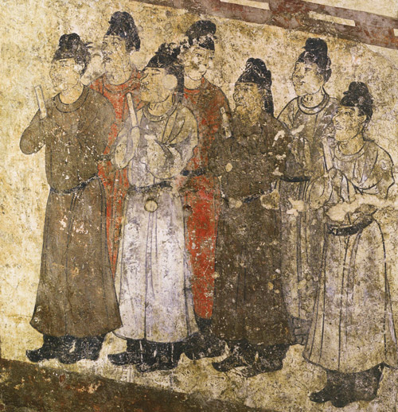
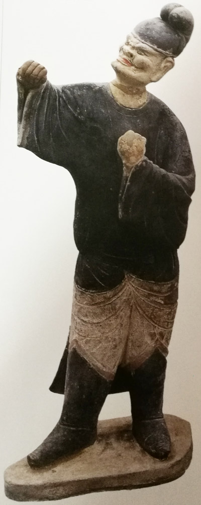
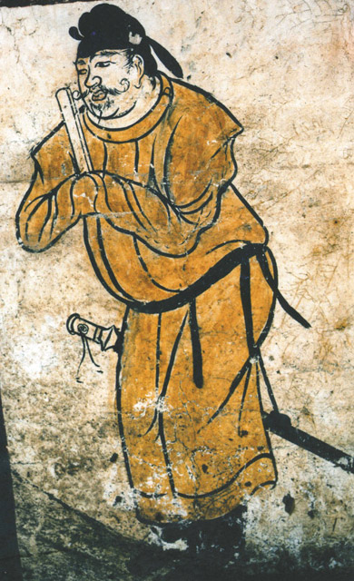
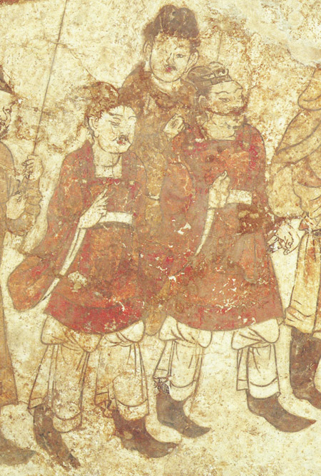

成年男性服饰
唐代男子服饰在吸收胡服式样的基础上，推陈出新，一改汉魏时期宽衣博带的风格，常服服饰主要为幞头、圆领袍衫、革带和长靿（yao）靴。
幞头是男子头饰中最常使用的一种，可谓是这一时期男子服饰的独特标志。幞头是一种包头用的巾帛，主要的变化在两脚上。双脚轻薄、柔软下垂的称为“软脚幞头”；两脚或圆或阔，犹如硬翅微微上翘的称为“硬脚幞头”。到了唐朝末年完全变成了帽子。

圆领袍衫是唐代男子常服的重要组成部分，其样式简单，剪裁方便，有利行动，故上自帝皇、下至厮役皆普遍穿着，用颜色、花纹做等级区别。一般是三品以上服紫，四品五品以绿色，八品九品为青色。

革带束在腰部，有的革带上有穿孔，下垂小带，上佩戴囊、刀砺等物件，称之蹀躞带，《旧唐书舆服志》中记载：武官五品以上佩革蹀躞七事：佩刀、刀子、砺石、契苾真、哕厥、针筒、火石，盛唐以后，革带下的环逐渐废去，蹀躞小带直接穿过銙上的“古眼”垂挂下来。山西金胜村唐墓壁画上的马夫及唐郑仁泰墓出土的骑猎俑都腰束蹀躞带。

靴子原为胡服，到唐时不再限于戎装，一般文武官员和庶民百姓都可穿着，只是样式略有差别。考古发现的唐代陶俑或壁画上处处可见穿靴的例子。
在考古出土材料中，可经常见到男子身着颇具胡风的翻领窄袖长、短袍服的形象，有的还在翻领袍内穿圆领袍衫。另外还有着上衣、下裤的袴褶服，如李寿墓第一过洞东壁仪卫图中就有两人上穿宽袖齐膝红袍，下着宽腿裤，裤管于膝部束扎。

尽管圆领袍衫的花纹、色彩、材质千差万别，幞头样式随时代也有变化，但以幞头、圆领衣为常服的唐代男子服饰不仅开创了服饰史上的新风，且影响深远。